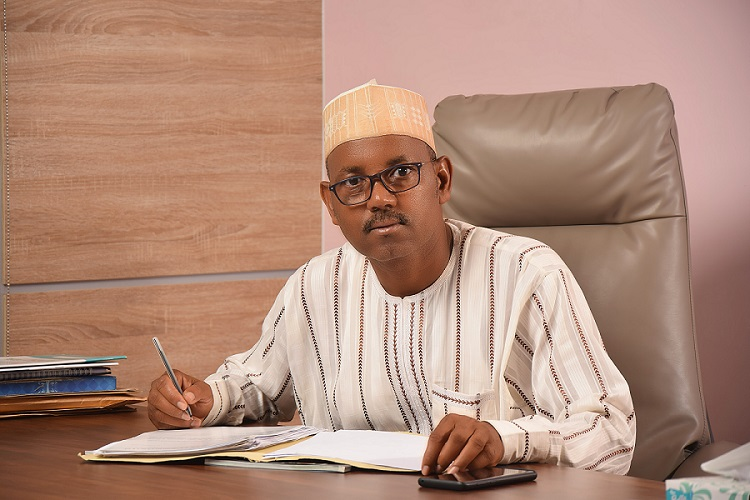
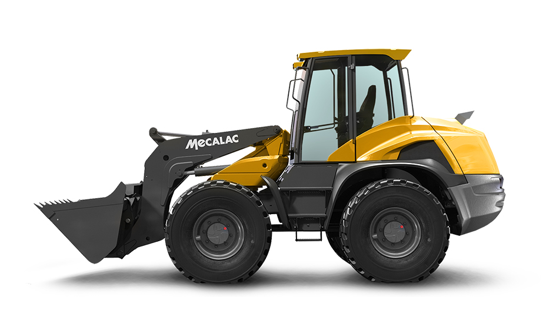

Two decades of promoting agricultural mechanization as a driver of wealth creation and food security in Nigeria.

Mass International and Equipment Nig. Ltd was founded in 2004 with headquarters in Rigachukun, Kaduna, along the Zaria–Kaduna Road, Kaduna State. It was registered with the Corporate Affairs Commission (RC. No: 502603). Its office facility spans over 30,000 square meters of land.
Mass International & Equipment Nig. Ltd is at the fore front of the promotion of agricultural activities for both field and crop production machinery and processing equipment in Nigeria. The company has been into importation, assembly and manufacturing of assorted tractors and relevant machineries for over two decades. All the implements are backed with relevant spare parts and other consumables. The company has also won a Certificate of Merit from the Kaduna State Chamber of Commerce, Industry, Mines and Agriculture for being the best Exhibitor of Agricultural Machinery in Nigeria.
To be at the foremost of the campaign for agricultural transformation through the promotion of mechanised farming as a veritable means of wealth creation for Nigerian farmers and sustainable economic growth for Nigeria.
To be a top-class company promoting agricultural mechanization as the main thrust for sustainability and food security, through excellent service delivery and responsiveness to all stakeholders.

Mass International and Equipment Nig. Ltd, Kaduna — an indigenous tractor marketing company — is desirous of undertaking the manufacturing of some vital agricultural implements in Nigeria.
This study is undertaken with the main aim of investigating and analyzing the business feasibility of the company for manufacturing and assembling tractor implements and crop handling equipment in terms of technical, management/marketing and financial aspects — and to develop a concept for the implementation of an appropriate, universally accepted and recognized agricultural machinery manufacturing and assembly plant in Nigeria.